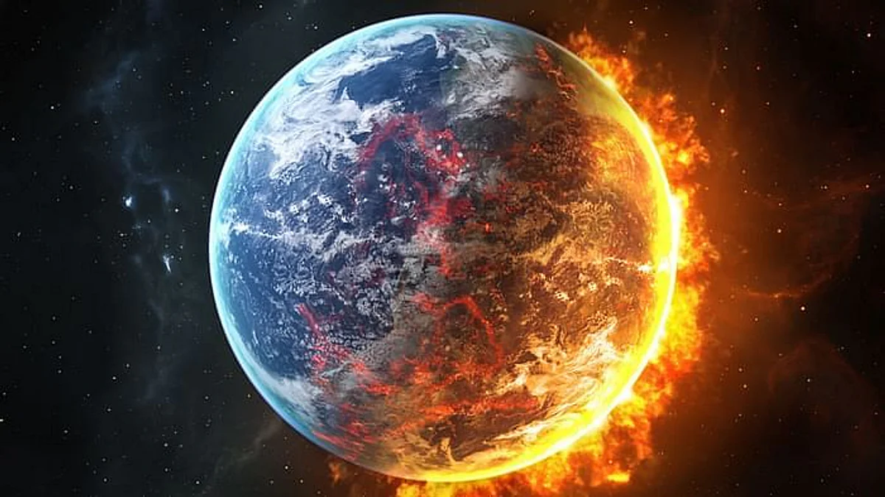

O que é o Aquecimento Global?
O aquecimento global refere-se ao aumento anormal da temperatura média do planeta registrado nas últimas décadas. Esse fenômeno é associado principalmente às ações antrópicas. "O aquecimento global designa o aumento das temperaturas médias do planeta ao longo dos últimos tempos, o que, em tese, é causado pelas práticas humanas – embora existam discordâncias quanto a isso no campo científico. A principal causa desse problema climático que afeta todo o planeta é a intensificação do efeito estufa, fenômeno natural responsável pela manutenção do calor na Terra e que vem apresentando uma maior intensidade em razão da poluição do ar resultante das práticas humanas"
Principais causas
"As principais causas do aquecimento global estão relacionadas, para a maioria dos cientistas, com as práticas humanas realizadas de maneira não sustentável, ou seja, sem garantir a existência dos recursos e do meio ambiente para as gerações futuras. Assim, formas de degradação ao meio natural, como a poluição, as queimadas e o desmatamento, estariam na lista dos principais elementos causadores desse problema climático." "O desmatamento das áreas naturais contribui para o aquecimento global no sentido de promover um desequilíbrio climático decorrente da remoção da vegetação, que tem como função o controle das temperaturas e dos regimes de chuva. A Floresta Amazônica, por exemplo, é uma grande fornecedora de umidade para a atmosfera, provendo um maior controle das temperaturas e uma certa frequência de chuvas para boa parte do continente sul-americano, conforme estudos relacionados com os chamados rios voadores. Se considerarmos essa dinâmica em termos mundiais, pode-se concluir que a remoção das florestas contribui para o aumento das médias térmicas e para a redução dos índices de pluviosidade em vários lugares."